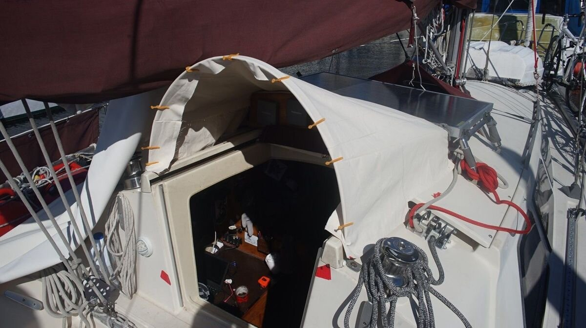

mini dodger
2022.04.09
Victoria, BC, Canada
Click below dates for more recent updates:
In July 2020 we lost our Sunbrella dodger at sea in the north pacific ocean after a big wave overwhelmed us from the stern. The force of it ripped out all of the deck ties, tore the Sunbrella to pieces (material was old) and snapped the 100W flexible solar panel that was laying over it in half. Since that day, we've been trying to find a worthwhile replacement to protect that space from rain and wave wash.
This is what our old dodger looked like. The canvas was a bit worn already then, in 2016.
We saw this accident as an opportunity to do something different, something that wouldn't cost us a fortune to build. To keep snow and rain outside while in port, we stitched up a boom tent. But when sailing, we cannot have this up.
We've been sailing without a dodger since that time, and we realized we both like having that part of the boat unobstructed.
The wide dodger we had prior to 2020 was good, but made it difficult to see up front, Rek was often standing on their tippy toes to see past it. We decided to build something that would only cover the companionway itself.

But hey, why not pay someone to make us a new dodger?
- a) working for a month to gather the money to pay someone to do it.
- b) spending a month to do it by trial and error.
At least whenever we choose b), we're left off with a handful of new skills. The end result may not be perfect, but we can always iterate.
We wanted to build the mini dodger last year, and we built a wooden arch. We cut pieces with a jigsaw, glued and clamped them together and sanded the whole thing. We thought of using the wood as the front of the arch, but were concerned it was too bulky. It wasn't high-quality wood, and to be strong it had to stay thick. When we left to sail for the summer we put it away in a locker and forgot about it.
This year, we went to borrow a swage tool from our good friend Peter, and we somehow started talking about the mini dodger. He told us he had a length of flat stainless steel that he wasn't using. It was exactly the length of our current wooden arch. Peter has a better onboard workshop that we do, and he let us use his space to bend the metal to shape.
Using his vice, and a heavy crescent wrench, we bent the two ends into an L shape. The bottom of the Ls would rest on the cabin top. Then, we dug out the wooden arch and used it as a template for the 'curve' of the arch.

We clamped the metal to the wood, and secured it with a bunch of zip ties (heavy zip ties would have been better, but we used what we had). We built that wooden template well, because the wood did not buckle, or crack. Then, Devine went to work drilling holes so we could secure the arch to the boat. We drilled two holes on the two 'feet', and two on the sides so that it wouldn't rock forward.
Drilling into stainless is a terrible affair, but it's a task that cannot be rushed! The trick is to drill hard, but slow, with plenty of lubrication. We had plenty of cobalt bits left over from the time when we drilled the broken stainless steel bolt out from our engine head last year (I still have nightmares about that).

With the length of metal still strapped to the wooden arch, we positioned the arch over top of the companionway so we could mark up some drill holes. Pino has a thick, thick hull, we had to use extra long bolts. Once we removed the wooden arch the metal tried to spring back into a less aggressive bend, we bolted one end down and pulled it the other leg using a winch opposite of it. When it was well-positioned, we marked the hole, drilled through and secured the second leg.
We added some butyl tape around the bolts to keep water out, and some two washers per side (one underneath, one up on top). From inside the boat, we added a lock nut on each side. We did this while it was blowing 30 kts outside. April is always an unstable month, the cold ground from the just-past winter and the warming air is the cause of this chaos.
We had some material (Sunforger's boat shrunk, a 100% 10 oz cotton marine canvas) left-over from our boom tent project that we wanted to re-use to make the canvas for the mini dodger. We would have liked to use burgundy Sunbrella, like the rest of our canvas, but it is expensive stuff, and we like to try and use up material we already have. Also, we've never made anything like this before and somehow it is more reassuring to practice on inexpensive material first.
To make a pattern for a dodger, we'd recommend check out the Sail-rite tutorials on how to make a dodger, they offer very good advice. Of course, we didn't do exactly this because we don't have access to the same material, and our dodger is smaller and easier to pattern.
We took various measurements, drew templates on tracing paper and used that to drawn patterns on our fabric. We left some room on the edges to make a good, clean seam.
Our plans was to build the dodger in three pieces. One top piece plus two sides pieces (one of the side pieces pictured below). We weren't confident enough to do it all with a single piece.

When we worked on the boom tent, we were at our friend's house and we had access to more tools. This time, we tried to do the project on the boat with what we had. We rarely have the right tools, but we always get things done.
To make it easier to run the folded seams through the sewing machine, it is a good idea to iron them flat. Lacking an iron, we misted the edge with a bit of water (spray bottle) and filled up a large metal measuring cup with hot water, then ran it across the folded seam, applying a bit of pressure as we went along. It worked quite well. We wore an oven mit, just in case the hot water would try to leap out of the cup. The measuring cup worked out because the metal is thin, it transfers heat well.
The next step was to stitch the seams down. We double-stitched each seam using UV-resistant sail thread.
We did a lot of back and forth, doing tests fits on the arch, marking areas with a pencil, making cuts, re-adjusting etc. Eventually, we got it to fit and stitched all three panels together. When stitching panels like this, be sure to account for the space lost to stitch the panels together, and to add some extra padding.
See it from the front.
Next, we re-enforced the top edge of the mini-dodger, adding a strip of marine vinyl to protect the fabric. The bottom of the mainsail sometimes spills down, and rubs on that area. Without protection it will chafe through (our old dodger had this too). We added a strip on the outside, which then folds over the metal frame. The vinyl was left-over from the oars cover we made last year.
The strip folds over the metal frame. A friend gave us a bunch of clips, they work a lot better than plastic clothes pins to test-fit the dodger!

We stitched on another length of vinyl-backed fabric on the inside of the dodger, and attached some d-rings to the inside of the flap to try and tie the dodger to the metal frame. We aimed to use grommets, but the store supplying them was closed for the weekend, so we improvised...
Was d-rings the best idea?
It wasn't. Grommets would have been better because it goes through the material. Now the flaps aren't laying flat, but it's not a big deal, what matters is that there is tension in the front of the dodger.
Sewing corners that would hug the contour of the instrument panel was not easy. We made a fold, drew around it and used that as a reference to make the corner. We cut some material away, and then stitched the two edges together. Like many sewing projects by complete novices, this part is best viewed from far away.
Our friends Karen and Dave on SY Dakota gave us some aluminium tracks and plastic tubing that we can use to tie the sides of the dodger down. We're glad they gave us these, because we had no real plan for that part of the dodger at that point.
We cut the tracks to size, scuffed the bottom so they adhere well, and glassed them in.
We didn't bolt the tracks in because there won't be that much tension there, and we prefer to avoid making holes in Pino if we don't have to. We had not planned on using tracks, so we had to cut open the seams on the side to slide in some very thin plastic tubing. The idea is that the fabric is sown over the tubing, which in turn goes into the track.
Last stop on this crazy mini-dodger making journey is to tension the back. We put in three grommets (our last three) in the fabric, backed with some vinyl to strengthen the area, and hand-stitched them with the Speedy Stitcher.
Then, we ran some lines through and into some holes in the back of the fibreglass instrument panel.
We noticed that the two corners that overlap the instrument panel were sliding up, and so we installed a snap fastener on each corner. One part is screwed into the fibreglass of the boat (pre-drilling required), and the other is snapped onto the fabric itself (a two-part piece). Our friend Dave had a custom snap fastening tool, with a die welded onto a pair of vise-grips (super clever). Now the two snaps keep the two corners down.
Voila, we now have a mini dodger!
We used up mostly items we already had, or that people gave us (we have very generous dock friends). Every boat has items they no longer need from past projects, in fact, it is not uncommon for us to pass on some of our own unused gear.
So, thank you Peter (MV Geordie) for the metal arch and Dave and Karen (SY Dakota) for the aluminium tracks!
2023.04.08
Victoria, Canada
Hey kids, always double check that your grommets are SS or brass!
Will replace this mess eventually... at least the red means they'll be easier to break off.
2024.10.25
Victoria, Canada
This year when returning to Victoria we noticed a lot of dark spots on the top of the dodger. It might have been mold, or maybe floatplane exhaust deposits(we have to clean it off our boat every year, the marina where we winter has a small floatplane airport nearby), but it looked pretty bad.
We tried less abrasive method first, using mild laundry detergent, but it didn't help. In the end, we had to soak the affected part of the fabric in a diluted bleach solution for about 30 minutes. Most resources recommend soaking for 5-10 minutes, but that wasn't long enough for our canvas material. After, we rinsed off the fabric with fresh water, let it dry on deck and then re-installed it! There are some faint dots visible still, but at least the darker areas are gone.
Also, on our sail to us se alaska this summer, one of the aluminum tracks broke off. The other track is still on. We'll probably have to fix it mechanically with screws... we both hate that idea, but glassing wasn't enough.
2025.03.02
Victoria, Canada
We cleaned the area, and spent time fixing both aluminum tracks mechanically. Now the mini-dodger is solid again!